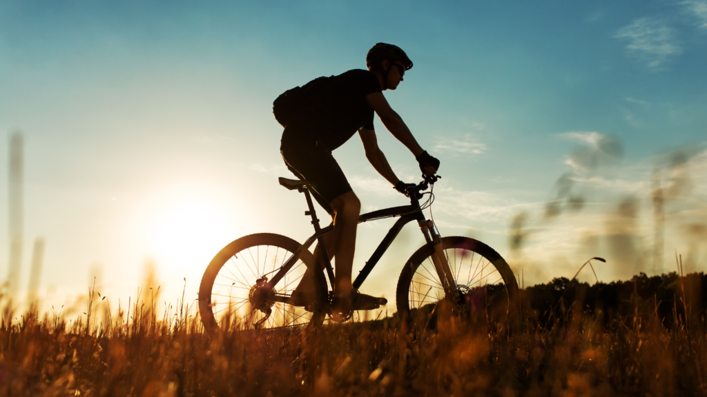

1. Cycling may help you lose weight
Cycling habitually, especially at a high intensity, can help lower your body fat levels, which promotes healthy weight management. Additional studies suggest that including sprint and strength training with regular cycling may temporarily increase your metabolism and build muscle, which allows you to burn more calories, even while at rest.
2. Cycling will help strengthen your legs
Cycling improves overall function in your lower body and strengthens your leg muscles without overstressing your joints. It targets your quads, glutes, hamstrings, and calves. To make your legs even stronger and enhance your cycling performance, try doing weightlifting exercises, such as squats, leg presses, and lunges, a few times per week.
3. Cycling is good for beginners
Riding a bike is fairly simple. If you have difficulty with a standard bicycle, stationary bikes are a great alternative. If you’re new to fitness or bouncing back from an injury or illness, you can cycle at a low intensity. As you get more fit, you can increase the intensity or continue to cycle at a chill pace. Studies have shown that even sedentary people reap the health benefits of cycling, so it can be a great introduction for exercise novices.
4. Cycling may lower cholesterol
The health-enhancing effects of cycling may help improve cholesterol levels, which can boost your cardiovascular health and lower your chances of stroke and heart attack. According to one review of 300 studies, indoor cycling has a positive effect on total cholesterol. It may boost HDL (good) cholesterol levels while lowering LDL (bad) cholesterol and triglyceride levels.
5. Cycling boosts mental health and brain power
Cycling can ease feelings of stress, depression, or anxiety. Focusing on the road or your cadence when cycling can help you develop concentration and awareness of the present moment. This may help take your focus away from the mental chatter of your day. Research backs this up. One study found that biking outside improved cognitive functioning and well-being for older adults. If you find yourself feeling lethargic, listless, or like your brain is moving slowly, get on your bike for at least 10 minutes. Exercise promotes the release of endorphins in your body, which helps you feel better while lowering your stress levels. As the study above found, exercise outdoors only increases these effects. You may feel more confident and content once you make cycling a regular part of your life.
6. Cycling can help people with cancer
Cycling is a fantastic addition to your care plan if you have or are recovering from cancer. However, many cancer patients experience low energy and pain during treatment, so be sure to work with your care team, listen to your body, and exercise only if you’re up for it. Cycling can also help keep you lean and fit, which may reduce your risk for certain types of cancer, including breast cancer. According to research from 2019, if you have breast cancer, staying active may help reduce side effects of cancer treatment, including fatigue, and improve your overall quality of life.
7. Cycling reduces air pollution
Driving motorised vehicles, like cars, is one of the biggest contributors to air pollution. Car fuels, in particular, include gases like carbon dioxide (CO₂) and nitrogen dioxide, which are seriously harmful to the environment when released in large volumes. On the other hand, cycling releases very little CO₂ into the air. So, straight away, it has an enormous environmental advantage. Shorter journeys, in particular, are where you’re most likely to notice the biggest environmental benefits of cycling. According to environmental organisation Hubbub, 50% of the journeys we take each day are less than two miles – meaning lots of unnecessary, excess pollution is sent into the air for journeys which could, in theory, be done on foot (or pedal!) Hubbub also states that in the UK alone, more than half (55%) of transport emissions come from cars, which has a hugely negative impact on our air quality. Switching short car trips for a cycle instead has huge environmental benefits, and what’s more – it’ll keep you physically fit, too.
8. Cycling reduces noise pollution
Pollution doesn’t just come in invisible gas form – there’s also noise pollution to be mindful of too. Noise pollution is usually classed as any unwanted or disturbing sounds that affect humans and animals’ health and wellbeing in that particular area. This type of pollution also impacts the health and wellbeing of wildlife. Studies have shown that sudden, loud noises can cause small insects like caterpillars’ hearts to beat faster and bluebirds, for example, to have fewer offspring. Animals use natural sound for all sorts of reasons, such as navigation, finding food, attracting mates and avoiding predators. If we, as humans, disrupt these sounds with noise pollution, it makes it difficult for animals to survive. Animals have to alter their behaviour and may even have to change locations to avoid noise, which has a detrimental knock-on effect on our entire environment. For example, if a bird leaves its forest and others follow, that forest may decline over time. This could then lead to that forest being cleared. This is called deforestation – we’ll come onto that a bit later. However, if there’s less noise from vehicles, traffic queues and the like, animals are more likely to stay and allow surrounding nature to thrive. So, by leaving the car at home and choosing to cycle instead, you’re not just helping to save the planet – but animals, too.
9. Cycling helps to reduce global warming
Cycling has been long-established as part of the solution for a low-carbon, greener future for the planet. And if you weren’t quite sure why before, you certainly are now after reading this blog. There’s little doubt among scientists and environmental experts that human activity contributes massively to global warming. But the good thing is that, as humans, we also have the power to enact positive change. According to data from Cycling UK, just 6% of urban passenger miles are from cycling. However, it’s estimated that increasing this to 11% by 2030 and 14% by 2050 could cut CO₂ emissions from passenger transport by 7% and 11%, respectively. In fact, research also suggests that if people in England cycled as much as people in the Netherlands, there’d be around two million fewer car commuters on the road. In theory, this would reduce the UK’s CO₂ output by an average of more than 1,500 tonnes a year.